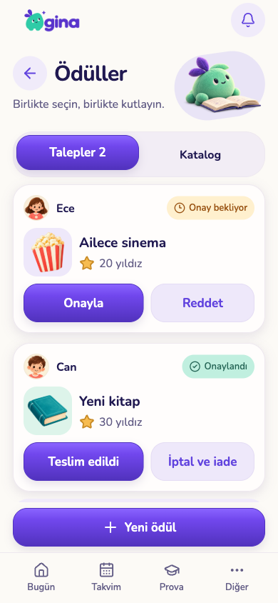
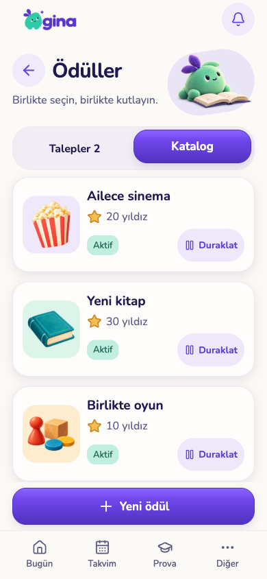
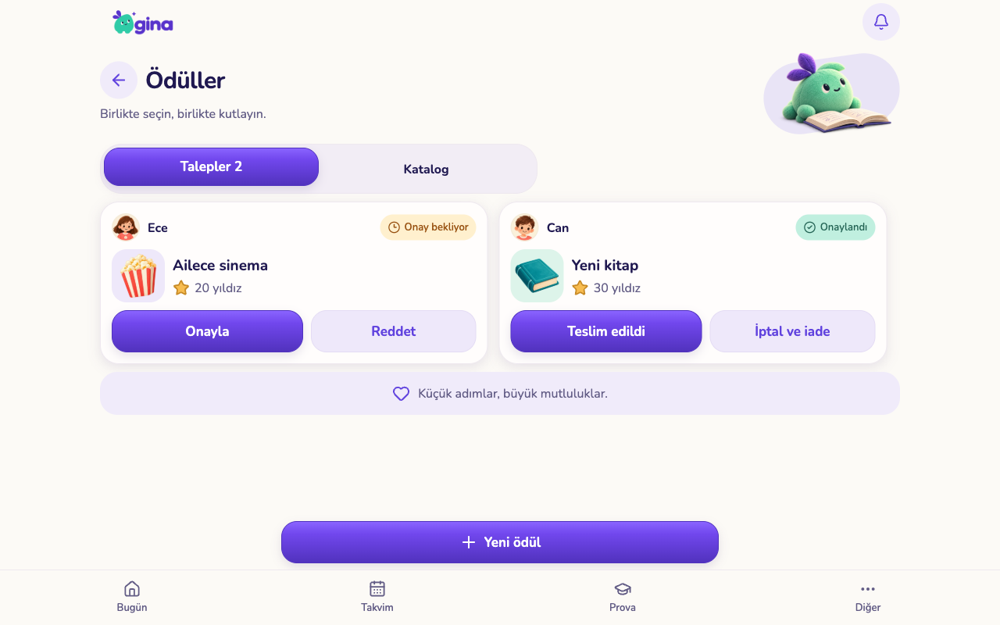
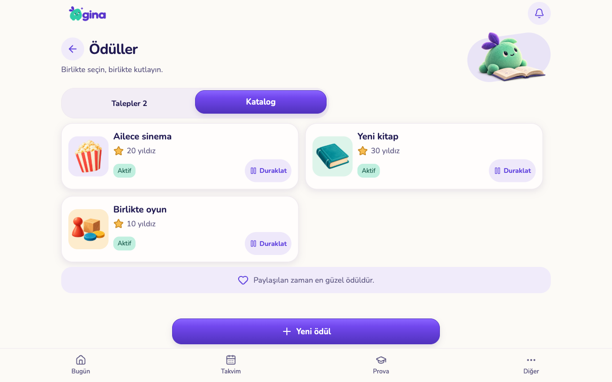
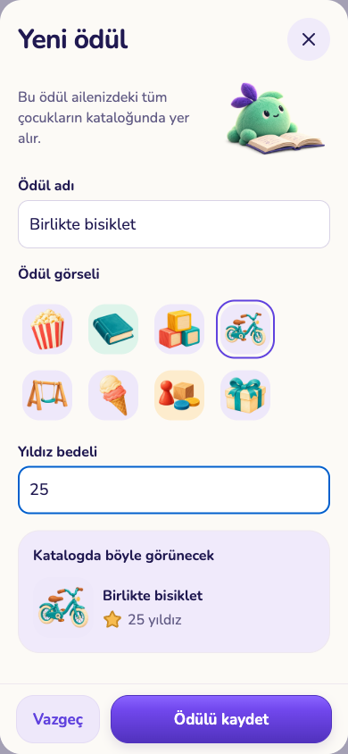
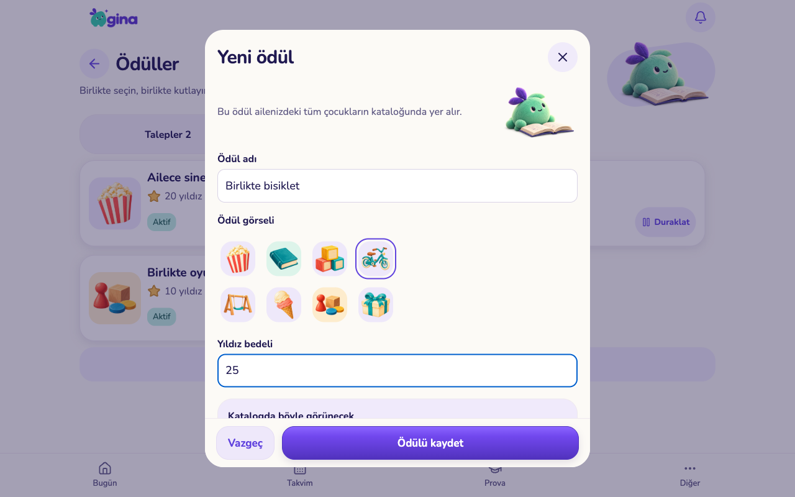
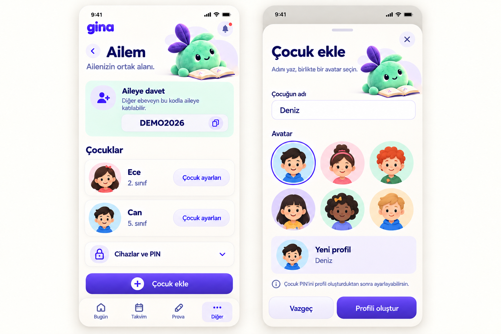

Ödüller · uygulama görüntüleri
Onaylanan tasarım çalışan uygulamaya taşındı. Telefon/tablet görüntüleri web sürümünden, yalıtılmış örnek verilerle alınmıştır; TestFlight görüntüsü değildir.
Telefon · 390 × 844
Talepler
Katalog
Tablet · 1280 × 800
Talepler
Katalog
Yeni ödül
Telefon
Tablet — kaydetme alanı sabit, form kaydırılır
Onaylı maket ve uygulama
Onaylı tasarım Uygulama — mevcut üretim varlıklarıyla
Uygulama — mevcut üretim varlıklarıyla
iPhone simülatörü
iPhone 17 Pro / iOS 26.5. Ödül onayı ve yeni ödül kaydı doğrulandı. Geliştirme göstergeleri ve simülatör çerçevesi dahildir.
Sıradaki tasarım · Ailem
Çocuk ekleme ve aile yönetimi için öneri; kodu henüz değişmedi. Diğer hesap/cihaz/PIN işlemleri kaydırılan bölümlerde korunacak. Görseldeki davet kodu örnektir; kopyalama simgesi önerilen kolaylıktır.

İşlev ve test notları